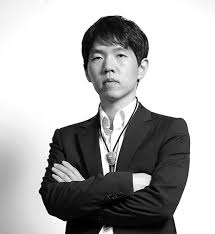

신산(神算)이자 국수(國手), 세계 바둑의 전설 이창호

이창호 (李昌鎬)
출생 : 1975년 7월 29일 (전라북도 전주시)
입단 : 1986년 (만 11세, 조훈현 9단의 문하생)
소속 : 한국기원 프로기사 9단
주요 타이틀 : 세계대회 그랜드슬램 달성, 통산 우승 140회 이상, 세계대회 21회 우승
주요 커리어 및 대기록
- 만 16세의 나이로 최연소 세계 챔피언 등극 (동양증권배 우승)
- 세계 바둑 역사상 유일무이한 세계 메이저 기전 '그랜드슬램' 달성
- 농심신라면조배 세계바둑최강전 '상하이 대첩'의 주역 (마지막 주자로 출격해 5연승 마무리의 기적)
- 약 10년이 넘는 세월 동안 세계 바둑 랭킹 1위 독점 및 국내외 기전 싹쓸이
감정을 숨긴 무결점의 돌부처, 바둑 패러다임을 바꾸다
이창호 9단은 조훈현, 이세돌, 신진서로 이어지는 한국 바둑 계보 중에서도 세계 바둑계의 판도를 뿌리째 뒤흔든 가장 거대한 거장입니다. 스승인 조훈현 9단의 화려하고 빠른 전신(戰神) 스타일과는 정반대로, 두텁고 정교하며 끝내기에서 상대를 숨 막히게 조여가는 이창호만의 독창적인 바둑 스타일을 구축했습니다.
그에게 붙은 '돌부처'라는 별명처럼, 그는 바둑판 위에서 유리하든 불리하든 그 어떤 감정의 동요도 드러내지 않는 것으로 유명했습니다. 상대가 아무리 거친 도발을 해와도 가장 이성적이고 차분한 '신산(神算)'의 계산력으로 응수했으며, 인공지능(AI)이 존재하기 훨씬 이전부터 인공지능에 가장 가까운 완벽한 형세 판단을 내렸던 천재였습니다.
"바둑에서 가장 어려운 것은 이기고 있을 때 마음을 다잡는 것이다. 승리는 끝내기 직전까지 온전히 내 것이 아니다."
그의 수많은 업적 중에서도 바둑 팬들에게 가장 전율을 돋게 만드는 순간은 바로 2005년의 '상하이 대첩'입니다. 한국의 패배가 짙어지던 농심배 최전선에서 마지막 주자로 홀로 등판해, 중국과 일본의 최정상급 기사 5명을 연달아 격파하며 기적 같은 우승을 견인했습니다. 화려함 대신 묵직함으로, 거친 수 대신 정수(正手)로 시대를 평정했던 그의 발자취는 오늘날까지도 모든 기사들이 우러러보는 위대한 전설로 남아있습니다.